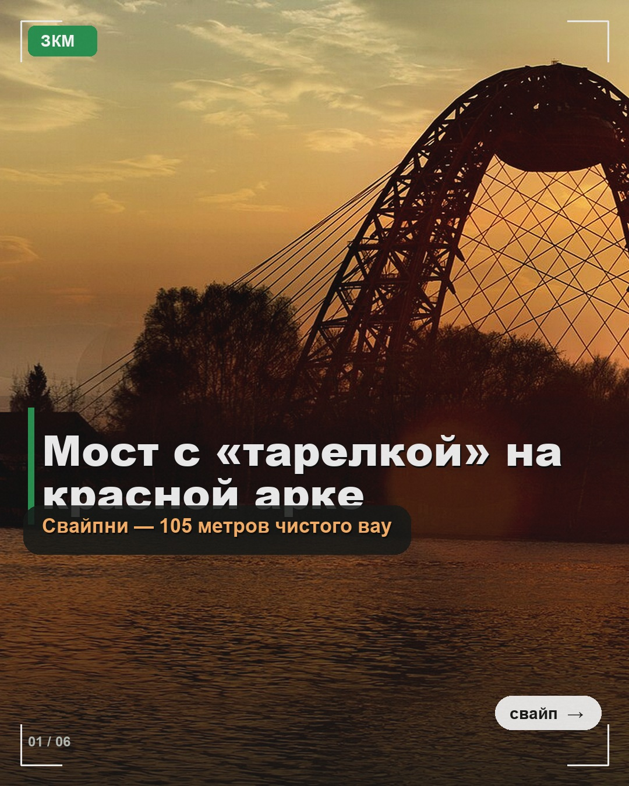
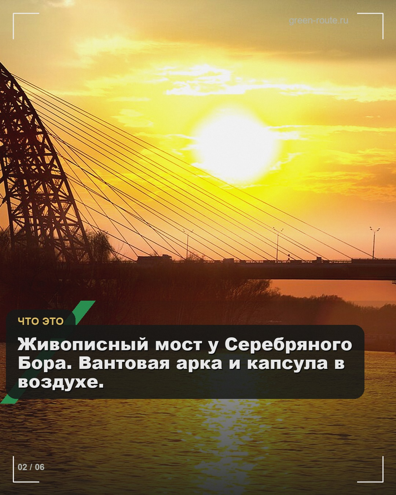
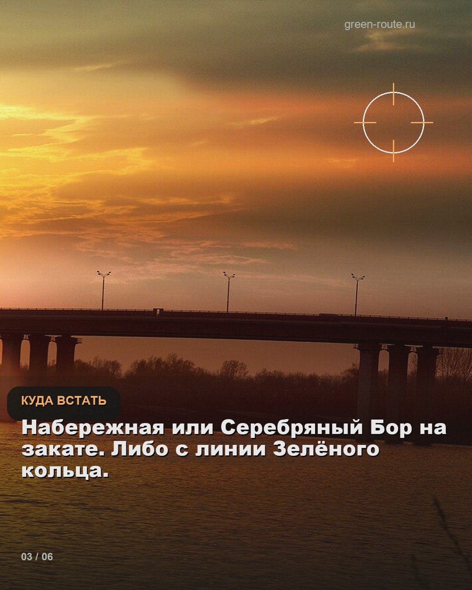
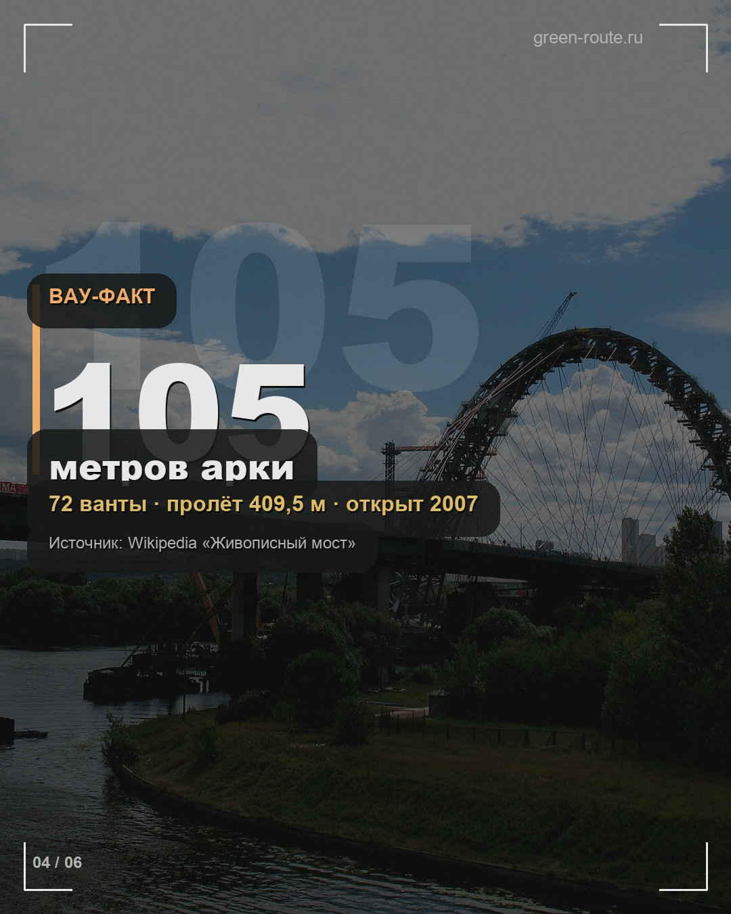
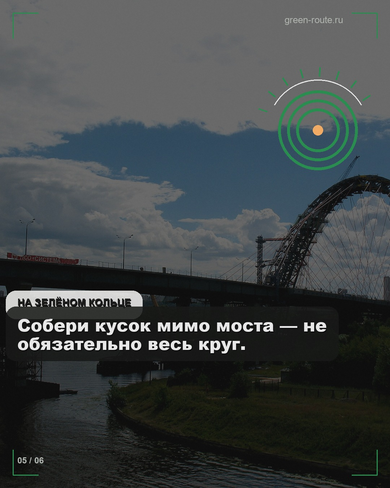
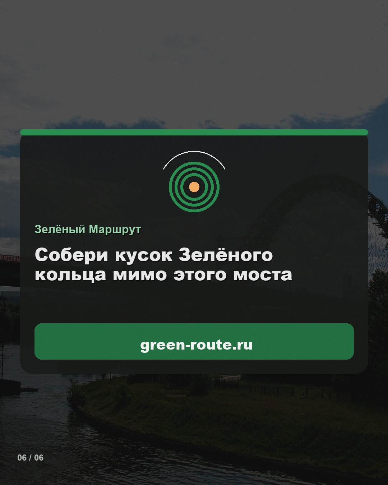

Полностью готовые JPEG 1080×1350 с авто-контрастом текста к пикселям фона, тёплые акценты только на тёмных плашках, графика (рамка, пин кольца, ретикл, grain). Бренд: Зелёный Маршрут · green-route.ru.






zeleny.marshrut Мост с «тарелкой» на красной арке — на Зелёном кольце. Собери кусок → green-route.ru
Файлы для залива в IG / SCRL:
export/battle-zhivopisny/slide-01.jpg … slide-06.jpg
· аудит: contrast-audit.json
python3 render_battle_zhivopisny.py